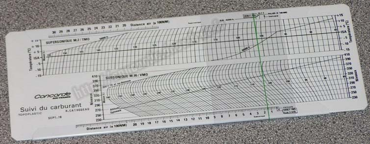
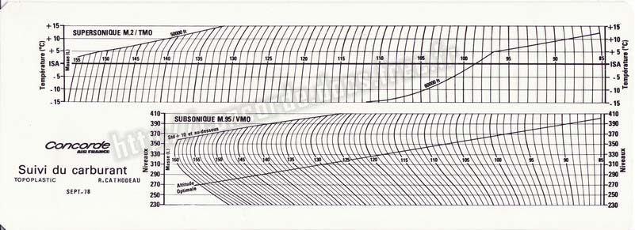
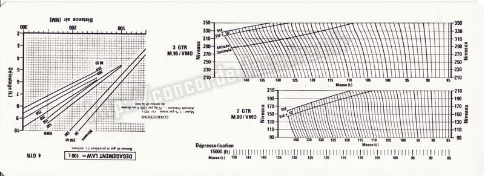
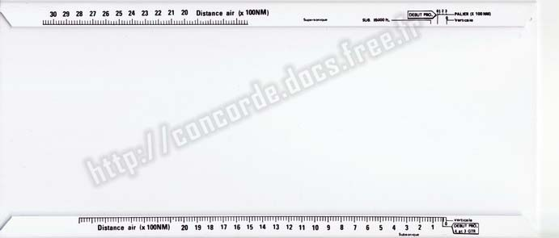
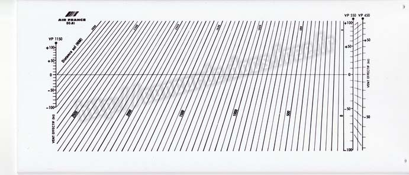
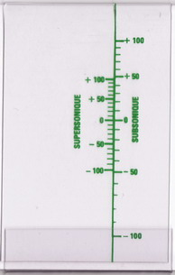

Avant l'apparition des calculatrices électroniques, tout calcul qui demandait un tant soit peu de précision nécessitait une règle de calcul. Si le type de calcul était bien défini (nombre de variables, formule, mini/maxi des variables,...), des abaques permettaient de faire très rapidement des calculs assez compliqués.
Par exemple, le calcul - durant un vol - de l'estimation du carburant qui restera à l'arrivée est assez compliqué, tout particulièrement pour le Concorde (formules différentes en subsonique et en supersonique). Ces calculs demandent plusieurs abaques, forts encombrants dans l'étroit cockpit de Concorde. C'est pourquoi Air France a mis en place dès octobre 1978 une règle de calcul construite tout spécialement pour ce travail. Sa taille de 260x95mm permettait de gagner beaucoup de place par rapport aux abaques.

La partie mobile a deux faces ; une pour les conditions de vols normales, et une pour les cas de pannes moteurs.


La face avant de la partie fixe a des onglets en haut et en bas, et le dos possède un abaque.


La deuxième partie mobile, en plastique transparent, ne contient qu'un trait vertical vert sur la face avant, mais possède deux échelles verticales sur la face arrière.

Consultez le mode d'emploi de la règle de calcul carburant